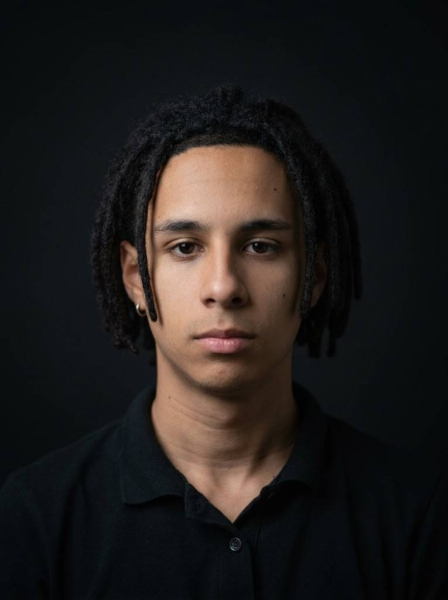

Estudante de Engenharia da Computação apaixonado por tecnologia, automação, hardware e design.

Sou estudante de Engenharia da Computação com experiência em tecnologia, robótica, design e automação.
Atualmente trabalho na escola SERIÖS como Técnico de TI, atuando com redes de servidor, manutenção de hardware, formatações e suporte técnico.
Domínio de sistemas, manutenção, hardware e softwares.
Conhecimento em composição visual, identidade e tipografia.
Configuração e manutenção de redes e servidores.
Programação, montagem e automação de projetos robóticos.
Trabalho com manutenção de hardware, redes, servidores, suporte técnico e formatação de computadores.
Ensino de robótica para crianças, programação de robôs e desenvolvimento lógico.
Responsável pela construção e programação do robô vencedor do Troféu de Design de Robô.
Sistema utilizando sensores para monitoramento de postura corporal.
Desenvolvimento de automações e dispositivos personalizados.
Email: pietroforwork@gmail.com
LinkedIn: linkedin.com/in/pietroforwork
Behance: behance.net/pietroabreus